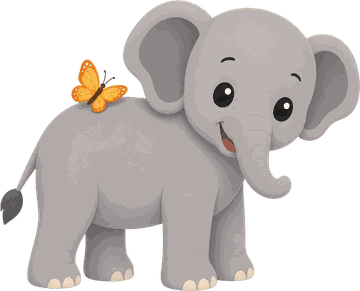
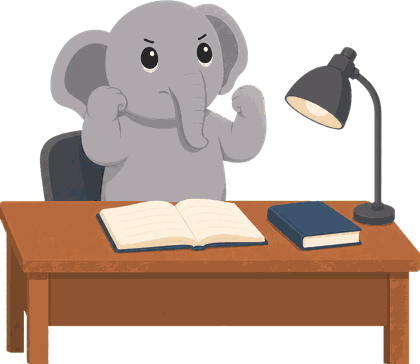
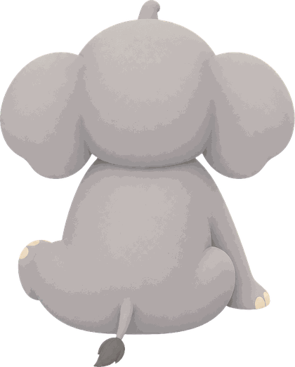

단축키
↑↓ 마감선 고르기
⌘+↑↓ 마감선 5분씩 옮기기
Delete 마감선 지우기
Esc 편집 끝내기
M 모드 순환 (타임라인·하루·주간)
오늘
빈 시간
계획
집중한 시간
지나간 계획
지난 7일
할 일
엘리의 하루마음을 돌보는 하루 플래너
매트릭스
루틴
일기
물통
오늘
10 / 10
로그인
계정이 없나요? 회원가입
일기
메모
한 번에 계획하기
마감
나의 다짐
00:00
설정
계정
엘리
이름
상단 바
한마디
D-day 이름
D-day 날짜
표시 항목
전환 주기 (분)
타임라인
장소
하루
기상 시각
취침 시각
하루 집중 목표 (분)
기상·취침 시각이 타임라인에 보이는 시간대를 정해요.
주 시작 요일
작업 추가
추가할 때 기본 길이 (분)
아이콘 표시 (숨겨도 값이 걸려 있으면 나타나요)
≡ 를 끌어 순서를 바꿀 수 있어요.
집중 페이지
짧은 집중
꺼 두면 2분 미만 집중은 타임라인에 블록을 남기지 않아요. 집중한 시간 자체는 물통·통계에 그대로 쌓이고, 켜면 지나간 짧은 기록도 다시 보여요.
기타
더보기
친구
나의 코드
···-···
친구 코드로 추가
친구 목록
친구
쪽지
친구 초대 🐘
내 프로필
아바타
피부색 / 엘리 색
지금 나는
고른 얼굴을 다시 누르면 자동으로 돌아가요
이름을 지어 주세요
하늘 아래에서 함께 지낼 코끼리예요.

나의 다짐

지금 나는
이번 주

엘리의 하루
내 안의 코끼리를 위한 플래너
하기 싫은 순간에 나를 비난하지 않고,
다시 움직이게 해요.
- 몇 시까지 — 시간을 정하면 더 빨리 끝나요
- 막힌 순간, 2분짜리 작은 시작
- 일주일 뒤, 다시 시작한 횟수가 별하늘로
아이폰 앱에서 더
딴짓 포스트잇
집중하다 딴생각이 나면, 그건 엘리가 딴짓하고 싶은 거예요.
포스트잇에 살짝 적어 두고 이따 하면 돼요 — 충동을 엘리에게 얹어 두는,
죄책감 없이 미루는 장치예요.
내 시간이 간 곳 아이폰 전용
하루가 끝나면 엘리가 시간의 행방을 보여줘요 — 가장 많이 쓴
앱·웹 Top 5를 '이 날'과 '7일 하루 평균'으로 겹쳐 봐요.
이 날 7일 하루 평균
스크린타임 API가 필요해 아이폰에서만 볼 수 있어요.물통 첫 만남 아이폰 전용
처음 열면 물통의 일곱 면이 높이 5로 차 있어 물통의 모양이
바로 보여요. 손가락 안내가 돌리기 → 면 고르기 → 높이 조절 3단계로
함께해요 — 한 단계씩 해내면 👍. 타임라인에선 손가락을 한 번
오므린 뒤 "한 번 더 오므려 보세요"라고 알려줘요.
새 루틴
반복
알림
기간
시작